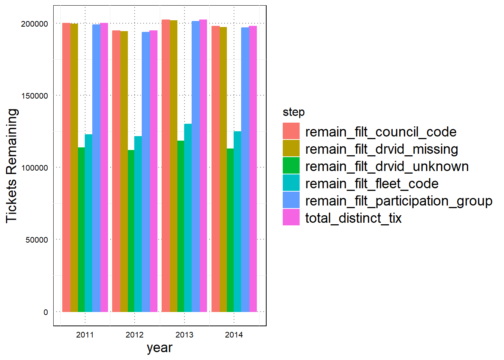
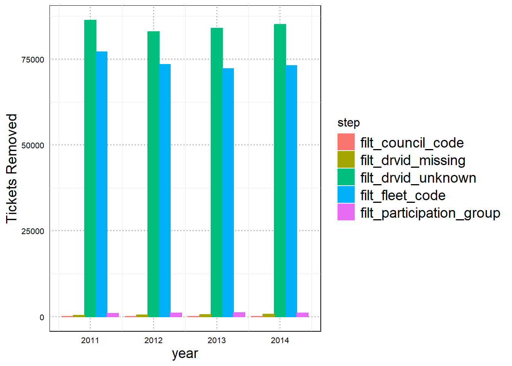
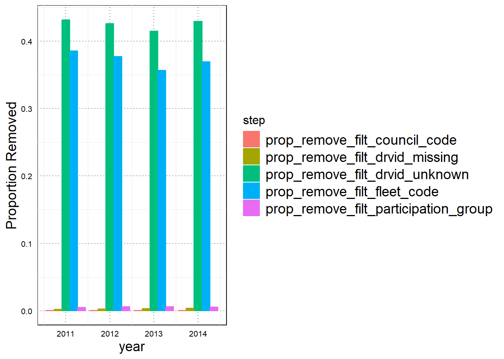
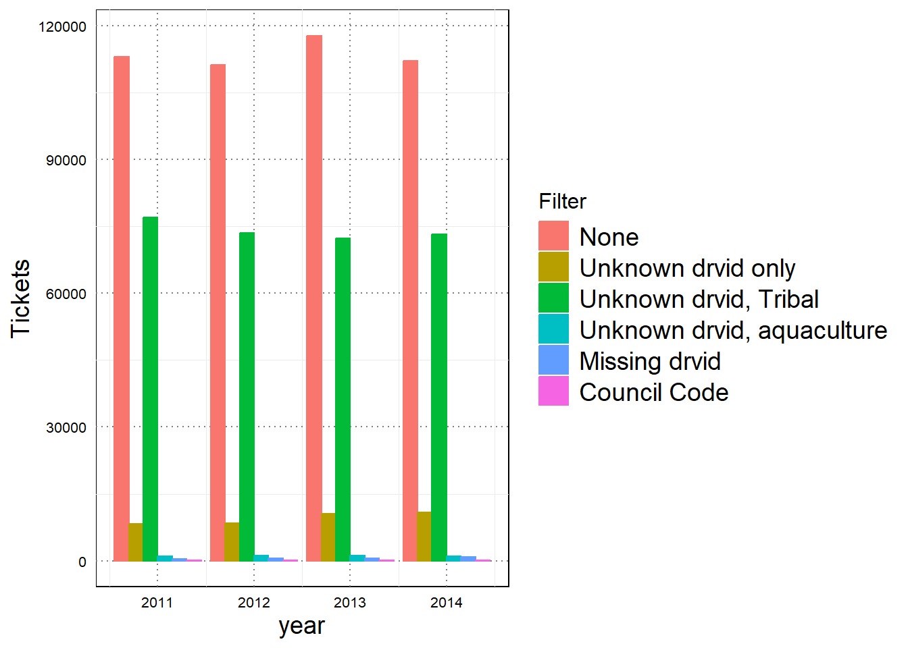

# choose landing and revenue metrics
pacfin_weight_metric <- "LANDED_WEIGHT_LBS" # another option is "LANDED_WEIGHT_MTONS"
pacfin_revenue_metric <- "EXVESSEL_REVENUE" # another option is AFI_EXVESSEL_REVENUE
# target_metric <- "revenue" # afi_revenue is an alternative option for newer fish tickets, but use caution as you need to know reference yearCheck fish ticket filters
Purpose
As QA/QC, we are checking the basic effect of different options for fish ticket filtering, based on conversations between Brooke, Abigail, Owen, Erin Steiner, and others who work a lot with PacFIN fish tickets. Additional filters to explore for VMS include:
- Fleet code:
FLEET_CODE != "TI"purpose is to remove tribal catch - Vessel id:
drvid == "MISSING"purpose is to remove tickets with missing vessel ID, currently VMS pipeline removes blanks and “UNKNOWN” - Council code:
COUNCIL_CODE != "N"(equivalent toCOUNCIL_CODE = "P" | COUNCIL_CODE = "*") purpose is to remove fish tickets landed in AK and transported to the WC - Participation group code:
PARTICIPATION_GROUP_CODE != "A"purpose is to remove aquaculture fish tickets; may be equivalent to removing records with blank vessel IDs and including only records with VMS data joined in, since the aquaculture tickets presumably have no vessel ID or VMS data associated with them
We will investigate the effects of these filters in a pretty coarse way, using an early-pipeline version of the fish tickets.
Raw Fish Tickets
Take 3 years of example fish tickets for testing. Arbitrarily chose 2011-2014.
## for running 2020 and 2021 pipeline, all fish tickets are already together:
rawdat <- read_rds(here::here('Confidential','raw','fish tickets','all_fishtickets_1994_2023.rds'))
rawdat <- rawdat %>%
filter(LANDING_YEAR %in% c(2011:2014))Select Columns
Keep all of the columns we want to try filtering on. Beyond those retained in our main pipeline, these include COUNCIL_CODE, FLEET_CODE, and PARTICIPATION_GROUP_CODE.
rawdat.sub <- rawdat %>%
dplyr::select(FISH_TICKET_ID, FTID, PACFIN_PORT_CODE, PACFIN_GROUP_PORT_CODE, DEALER_ID, VESSEL_NUM, AGENCY_CODE, GEAR_CODE, GEAR_NAME, PACFIN_GROUP_GEAR_CODE, REMOVAL_TYPE_CODE, REMOVAL_TYPE_NAME, LANDING_DATE, LANDING_MONTH, LANDING_YEAR, NOMINAL_TO_ACTUAL_PACFIN_SPECIES_CODE, LANDED_WEIGHT_LBS, EXVESSEL_REVENUE,COUNCIL_CODE,FLEET_CODE,PARTICIPATION_GROUP_CODE) %>%
# change some column names
set_colnames(c("Rec_ID", "FTID", "pacfin_port_code", "port_group_code","dealerID","drvid", "agency_code","gear_code", "gear_name", "gear_group", "removal_type_code", "removal_type_name", "date", "month", "year",
"NOMINAL_TO_ACTUAL_PACFIN_SPECIES_CODE", "LANDED_WEIGHT_LBS", "EXVESSEL_REVENUE","COUNCIL_CODE","FLEET_CODE","PARTICIPATION_GROUP_CODE"))Test Filtering Decisions
As a preliminary test, run the filters above and get a sense of their effects.
# How many total observations?
rawdat.sub %>% count(year) year n
1 2011 445402
2 2012 444188
3 2013 465371
4 2014 443828# How many unique Rec_IDs (formally FISH_TICKET_ID)
unique_tix_year <- rawdat.sub %>% distinct(year,Rec_ID) %>% count(year)
unique_tix_year # this is our starting point year n
1 2011 199890
2 2012 194804
3 2013 202330
4 2014 198007Original pipeline
In the main pipeline, in Step 01, the only filtering we do is to filter out vessel IDs that are unknown or blank, and filter for our year and species of interest. We will ignore the species and year filtering, and focus on these topline filters.
Remove the columns where the vessel identifier (drvid) is either “UNKNOWN” or blank (““)
datfilt <- rawdat.sub %>%
mutate(filt_drvid_unknown=ifelse(drvid=="UNKNOWN"|drvid=="",1,0))Tribal Fleet Codes
To remove Tribal catch, Erin uses FLEET_CODE != "TI"
datfilt %<>%
mutate(filt_fleet_code = ifelse(FLEET_CODE == "TI",1,0))DRVID Missing
Others remove vessel IDs that are designated as ‘MISSING’. Is this different than our filtering of drvids that are ‘UNKNOWN’ or blank?
datfilt %<>%
mutate(filt_drvid_missing=ifelse(drvid=="MISSING",1,0))North Pacific Council Code
Filter fish tickets landed in AK and transported to the WC
datfilt %<>%
mutate(filt_council_code=ifelse(COUNCIL_CODE=='N',1,0))Participation Group
Filter to remove aquaculture fish tickets.
datfilt %<>%
mutate(filt_participation_group=ifelse(PARTICIPATION_GROUP_CODE=='A',1,0))Plot
Using these flags, investigate how many records are removed by doing filtering this way, and also test the overlap between these filters
dat_filter_effects <- datfilt %>%
# unique fish tickets
distinct(year,Rec_ID,.keep_all = T) %>%
group_by(year) %>%
mutate(filt_total=filt_drvid_unknown+filt_drvid_missing+filt_fleet_code+filt_drvid_missing+filt_council_code+filt_participation_group) %>%
# for each year, count the tickets to be removed by each of these filters
summarise(total_distinct_tix = n(),
filt_drvid_unknown=sum(filt_drvid_unknown),
filt_drvid_missing=sum(filt_drvid_missing),
filt_fleet_code=sum(filt_fleet_code),
filt_council_code=sum(filt_council_code),
filt_participation_group=sum(filt_participation_group)
) %>%
ungroup() %>%
mutate(across(contains('filt'), ~total_distinct_tix - .x,.names="remain_{.col}")) %>%
mutate(across(contains('filt'), ~.x/total_distinct_tix,.names="prop_remove_{.col}")) %>%
dplyr::select(!contains("prop_remove_remain"))Tickets remaining after each individual type of filtering
dat_filter_effects %>%
dplyr::select(year,total_distinct_tix,contains("remain")) %>%
dplyr::select(!contains('prop')) %>%
pivot_longer(-year,names_to = "step",values_to="tix") %>%
ggplot(aes(year,tix,fill=step,color=step))+
geom_col(position=position_dodge())+
labs(y="Tickets Remaining")
Tickets removed by each individual type of filtering (i.e., the inverse of the above plot)
dat_filter_effects %>%
dplyr::select(year,!contains("remain"),-total_distinct_tix) %>%
dplyr::select(!contains('prop')) %>%
pivot_longer(-year,names_to = "step",values_to="tix") %>%
ggplot(aes(year,tix,fill=step,color=step))+
geom_col(position=position_dodge())+
labs(y="Tickets Removed")
Proportion of tickets removed by each individual type of filtering
dat_filter_effects %>%
dplyr::select(year,contains('prop')) %>%
pivot_longer(-year,names_to = "step",values_to="tix") %>%
ggplot(aes(year,tix,fill=step,color=step))+
geom_col(position=position_dodge())+
labs(y="Proportion Removed")
Multiple Filters
There must be significant overlap in these filters. Check.
# Give all of the individual filters a letter (A, B, etc.) and then concatenate them to see if records are filtered through multiple filters
dat_filt_overlaps <- datfilt %>%
# unique fish tickets
distinct(year,Rec_ID,.keep_all = T) %>%
select(year,Rec_ID,contains('filt')) %>%
mutate(filt_drvid_unknown=ifelse(filt_drvid_unknown==1,"A",""),
filt_fleet_code=ifelse(filt_fleet_code==1,"B",""),
filt_drvid_missing=ifelse(filt_drvid_missing==1,"C",""),
filt_council_code=ifelse(filt_council_code==1,"D",""),
filt_participation_group=ifelse(filt_participation_group==1,"E","")) %>%
unite("filt_all",contains('filt'),sep="") %>%
group_by(year,filt_all) %>%
summarise(tix=n()) %>%
ungroup()`summarise()` has grouped output by 'year'. You can override using the
`.groups` argument.glimpse(dat_filt_overlaps)Rows: 24
Columns: 3
$ year <int> 2011, 2011, 2011, 2011, 2011, 2011, 2012, 2012, 2012, 2012, 2…
$ filt_all <chr> "", "A", "AB", "AE", "C", "D", "", "A", "AB", "AE", "C", "D",…
$ tix <int> 113087, 8287, 77074, 968, 446, 28, 111297, 8434, 73486, 1091,…dat_filt_overlaps %>%
ggplot(aes(year,tix,fill=filt_all,color=filt_all))+
geom_col(position = position_dodge())+
scale_fill_discrete(labels=c("None","Unknown drvid only","Unknown drvid, Tribal","Unknown drvid, aquaculture","Missing drvid","Council Code"))+
scale_color_discrete(labels=c("None","Unknown drvid only","Unknown drvid, Tribal","Unknown drvid, aquaculture","Missing drvid","Council Code"))+
labs(y="Tickets",fill="Filter",color="Filter")
Takehomes for me:
- Filtering
drvid=="UNKNOWN"seems to completely encompass both tribal catch (FLEET_CODE) and Aquaculture (PARTICIPATION_GROUP_CODE), since no observations are filtered out based on fleet code or participation code alone. drvid=='MISSING'is a relatively small proportion of the tickets, and importantly, I am pretty sure these get filtered out later in the pipeline because they will not match to VMSCOUNCIL_CODE==Nis a very small proportion of tickets (20-28 tickets total in each year, out of ~200,000 = approximately 0.01%)
Based on this information, I do not think our pipeline needs updating- these suggested filters either have vanishingly little effect, or are already encompassed by our existing filtering process.